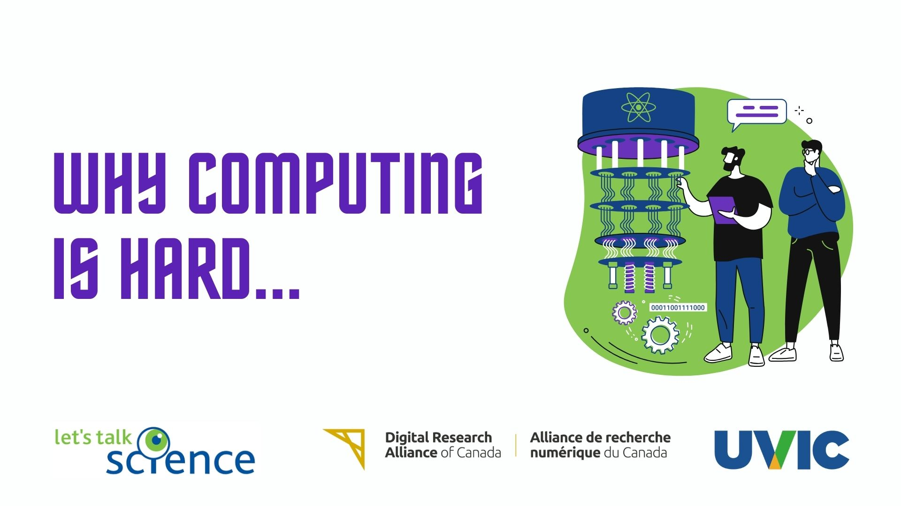
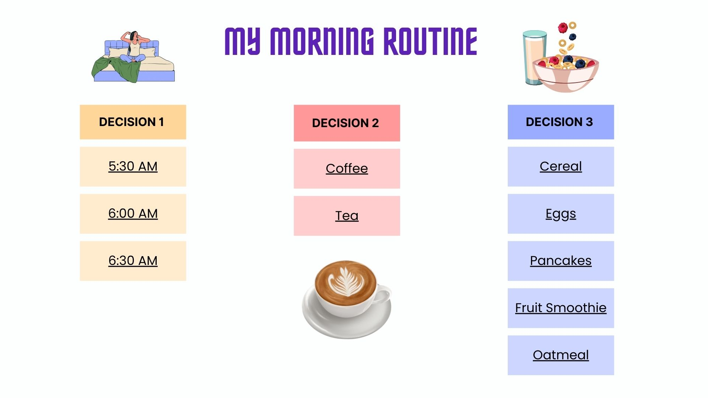
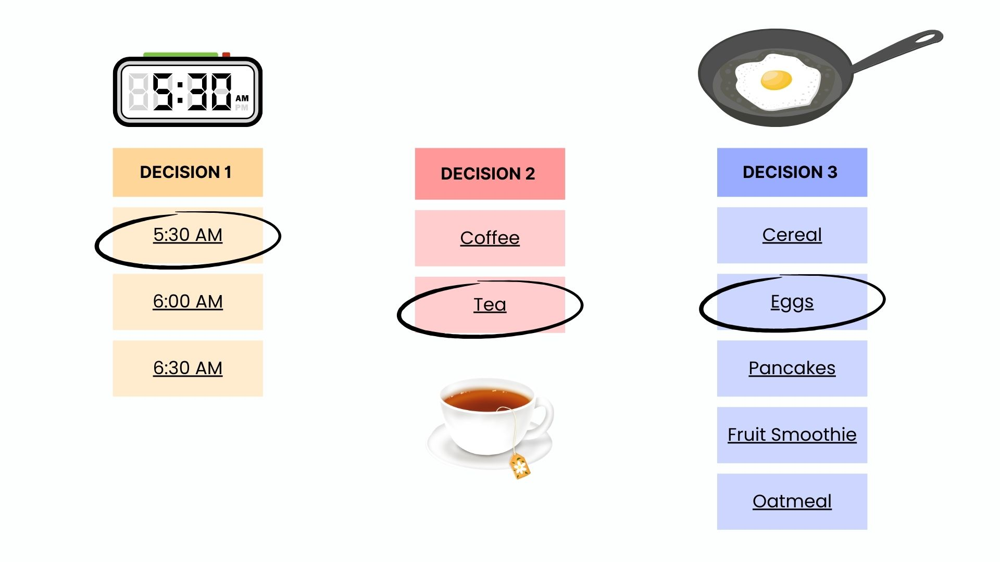
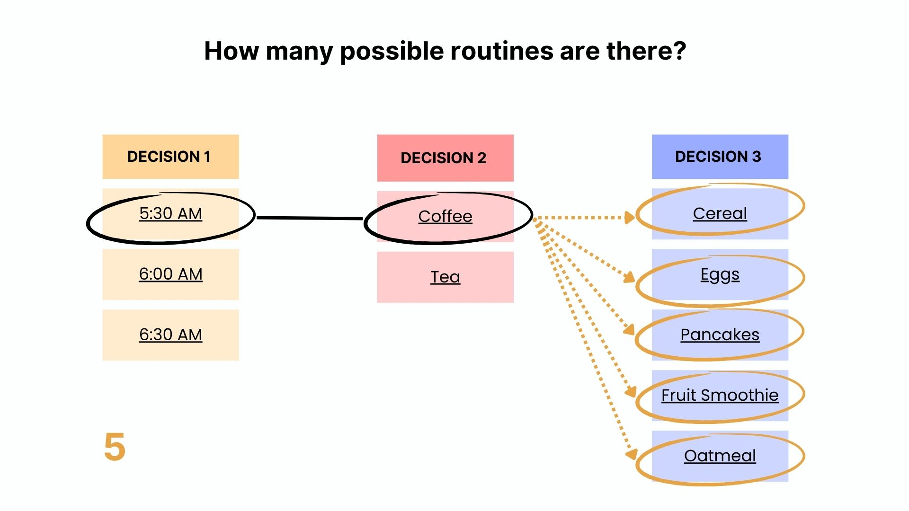
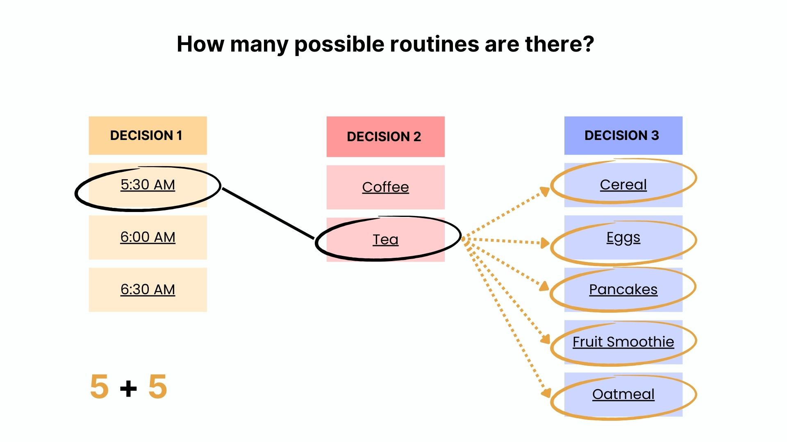
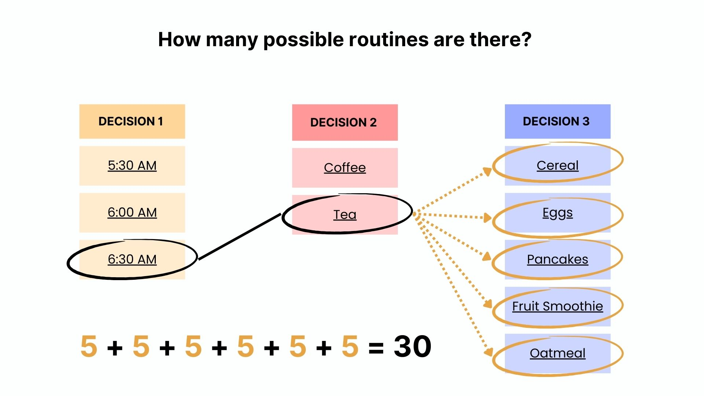
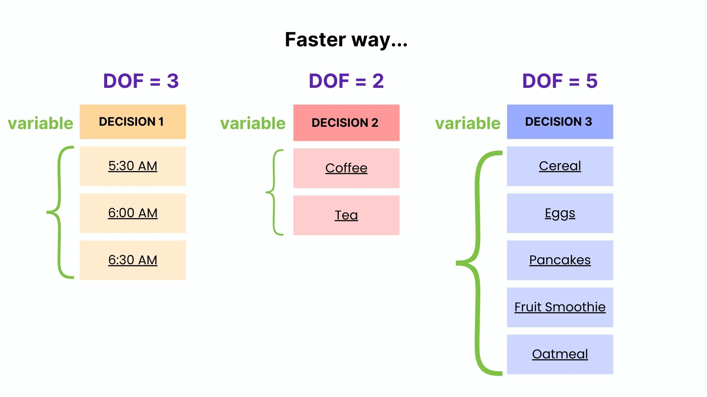
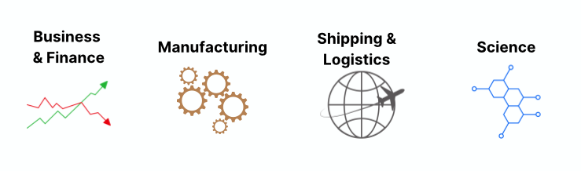

Section Objectives
to consider the complexity of optimization problems in everyday life
to review binary code and introduce higher-dimensional codes
to discuss the limitations of classical computing in terms of computational resources
Optimization Problems#
Optimization-type problems are commonplace in everyday life. Consider the scenario outlined in the section below.
How to have the perfect day 👌#
In our daily lives, we make a lot of decisions. In fact, the average human being makes around 35 000 decisions in a day. From small decisions like deciding to take a sip of water, to more deliberate actions like how to reply to a message. What if we knew exactly what choices we need to make in order to have the best day possible?
Imagine we have a special type of calculator that tells us how optimal our day was. We tell this calculator all the decisions we made that day (input) and it calculates for us how optimally we spent the day out of 100% (output). As it’s calculating, it takes into consideration the work we did, the fun we had, the amount of rest we got etc.
For now, let’s keep it simple. Let’s say we want to develop the perfect morning routine that leads to the best day ever. For our particular morning routine, there are only 3 decisions to make: (1) the time we get up, (2) our choice of what to drink, and (3) our choice of what to eat as breakfast.

For the first decision of the day, we have 3 options: to wake up at 5:30 am, to wake up at 6:00 am or to wake up at 6:30 am. For the second decision of the day, we choose whether to drink coffee or tea. For the third decision, we decide exactly what we want to have for breakfast.
One example of a routine that we can choose is to wake up at 5:30am, choose to drink tea, and finally choose to eat eggs.

How many possible morning routines are there in total? 🧠
Answer
There are 30 morning routines possible from the options given.
We can solve this using the diagram. If we fix the first two decisions, we will always have 5 possible morning routines from the options given for the last decision.

Then, if we keep the first decision fixed and change the second, we will also get another 5 routines from the options of the last decision.

If we continue in this manner, we obtain 30 routines in total.

Note
The first decision of the day represents the first variable of the problem with 3 degrees of freedom. The second decision is the second variable of the problem with 2 degrees of freedom. The third decision is the third variable with 5 degrees of freedom. The total morning routines we can have are obtained by multiplying the degrees of freedom for each variable together.

Which decision combo gives the best result? 🧠
Answer
To get the answer to this, we need to run each of the 30 combinations through our special calculator in order to see which one gives us the best result. Since we do not have a full idea of how our calculator is computing, we must use brute-force and compute the outputs one by one to see which input gives the best result.
Formula#
If you have a system with \(n\) variables called \(x\) with specified degrees of freedom for each variable \(d\), then the total number of combinations \(T\) is simply obtained by multiplying together the degrees of freedom for each of \(n\) variables.
So what happens when we increase the number of variables or the degrees of freedom? 🧠
Answer
If we increase the number of variables \(n\), we have more numbers to multiply together. Hence, the total number of combinations \(T\) gets bigger.
If we increase the degrees of freedom \(d\), then the numbers we are multipling together are large. The total number of combinations \(T\) also gets bigger.
Real-life examples of optimization problems#

Business and Finance: Which stocks to invest in and how much of each stock in order to minimize risk and optimize profit
Manufacturing: What materials to use considering cost, quality and human safety
Shipping and Logistics: What sets of items/orders to pack into each transport vehicle considering volume, load, cost, driver’s route, delivery speed etc.
Science: Given all the elements in the periodic table, which combination can help us design the ideal drug to treat a specific disease.
Why computing is hard#
Many of these problems are still extremely difficult to compute. Once the number of variables \(n\) in the problem and/or the degrees of freedom \(d\) for each variable becomes big, then the total number of possible combinations becomes incredibly large. This is called combinatorial explosion!